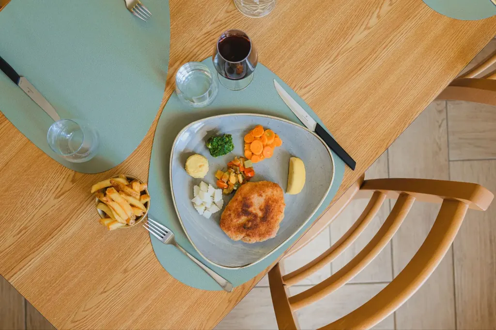
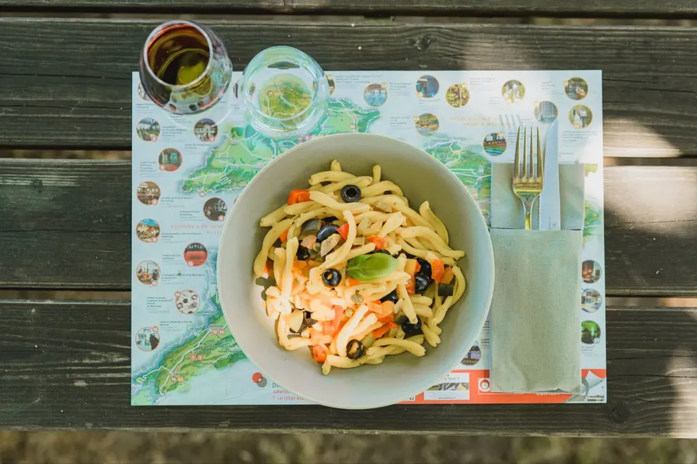
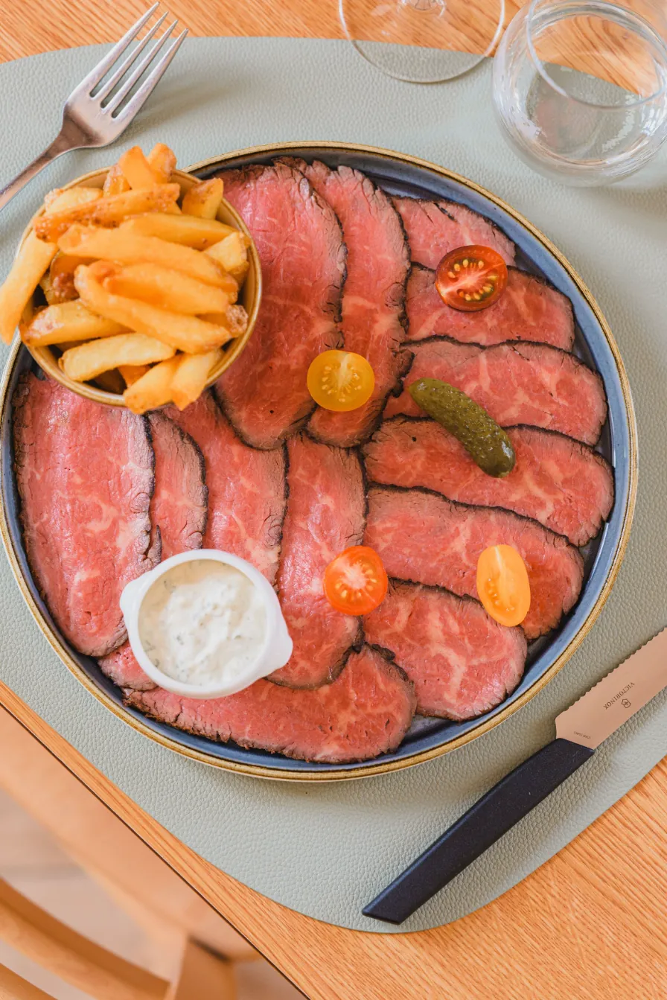
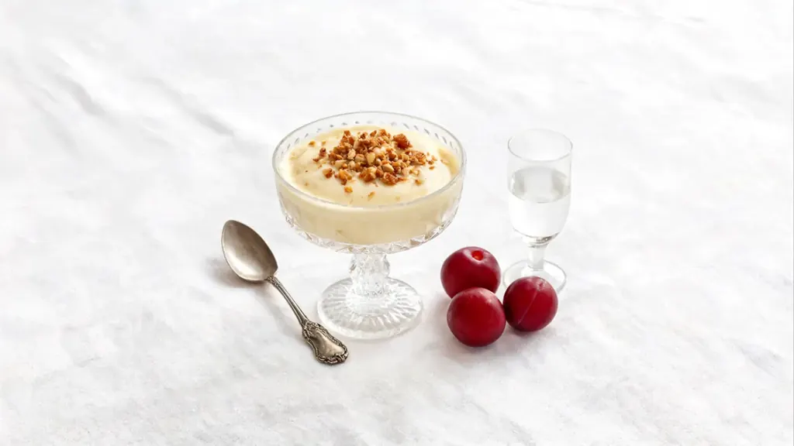
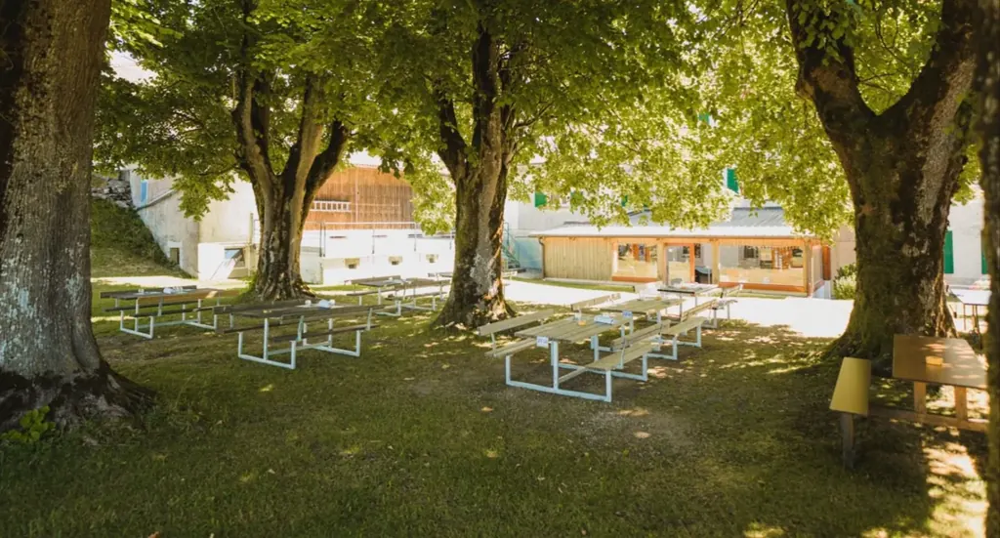

Une cuisine de cœur et de tradition
Cuisine familiale et régionale, gibier en saison, produits d’artisans d’Ajoie et du Jura : l’esprit d’auberge, servi avec soin.
« Depuis cinq générations, notre maison cultive l’art d’une cuisine authentique et généreuse. Cuisine de cœur et de tradition, elle mêle des saveurs délicates et colorées, inspirées des souvenirs d’enfance. »
Chaque plat raconte une histoire familiale transmise de génération en génération et perpétue, aujourd’hui encore, l’esprit d’auberge où l’on partage chaleur et convivialité.
La famille Petignat

La carte d’automne 2026
Prix en francs suisses, TVA 8,1 % incluse. Renseignements sur les allergènes sur demande.



Photographies de la maison.

Les artisans de notre table
Une cuisine d’auberge commence chez les voisins. Sur la carte, chaque origine est indiquée.
- Pain
- Boulangerie-Confiserie Roelli, Porrentruy
- Jambon
- Boucherie Gatherat, Boncourt
- Truites
- Pisciculture Choulat, Jura
- Fromage
- Gruyère de Develier
- Viandes
- Majoritairement suisses, origine indiquée plat par plat

Menus de groupe 2026
Vous composez votre menu parmi nos propositions : une entrée, un plat, un dessert maison. Le même menu est servi à tous les convives.
- Dès 10 personnes
- Réservation 7 jours à l’avance
- Menu identique pour tous
- TVA 8,1 % incluse
Voir toutes les propositions de groupe

La terrasse sous les arbres
Quand le soleil chauffe le col, on mange à l’ombre des grands arbres, pendant que les enfants filent vers les places de jeux et que les joueurs de pétanque demandent leurs boules au comptoir.
Réserver votre table
Horaires
Jusqu’au 26 novembre 2026
| Lundi | 9 h – 22 h 30 |
|---|---|
| Mardi | 9 h – 22 h 30 |
| Mercredi | Fermé |
| Jeudi | Fermé |
| Vendredi | 9 h – 23 h |
| Samedi | 9 h – 23 h |
| Dimanche | 9 h – 22 h 30 |
Du 27 novembre 2026 au 31 mars 2027
| Lundi | 9 h – 14 h 30 · 18 h – 22 h 30 |
|---|---|
| Mardi | 9 h – 14 h 30 · 18 h – 22 h 30 |
| Mercredi | Fermé |
| Jeudi | Fermé |
| Vendredi | 9 h – 23 h |
| Samedi | 9 h – 23 h |
| Dimanche | 9 h – 15 h · 18 h – 22 h 30 |
Fermetures : 24, 25 et 26 décembre 2026 · 6 mai 2027. Horaires indiqués par la maison, susceptibles d’évoluer : en cas de doute, appelez-nous.
Questions fréquentes
Le restaurant propose-t-il des plats végétariens ?
Oui : sur la carte d’automne 2026, raviolis maison au potimarron (CHF 26.–), croûte aux chanterelles fraîches (CHF 25.–) et assiette de garnitures de chasse avec spätzlis maison (CHF 26.–).
Y a-t-il un menu pour les enfants ?
Oui : petit jambon chaud de la Boucherie Gatherat avec frites et carottes (CHF 12.–) ou nuggets de poulet maison (CHF 14.–). Deux grandes places de jeux attendent les enfants à côté du restaurant.
Comment réserver pour un groupe ?
Dès 10 personnes, le groupe choisit un menu identique pour tous parmi nos propositions, au moins 7 jours à l’avance, par téléphone au 032 426 66 56 ou via notre formulaire de demande.
Comment sont signalés les allergènes ?
Les renseignements sur les allergènes sont donnés sur demande : indiquez-nous vos besoins en réservant.
D’où viennent les produits ?
Le pain vient de la Boulangerie-Confiserie Roelli à Porrentruy, le jambon de la Boucherie Gatherat à Boncourt, les truites de la Pisciculture Choulat, le gruyère de Develier. Les viandes sont majoritairement suisses ; l’origine de chaque produit figure sur la carte.